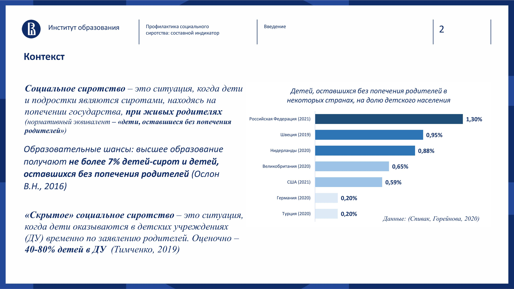
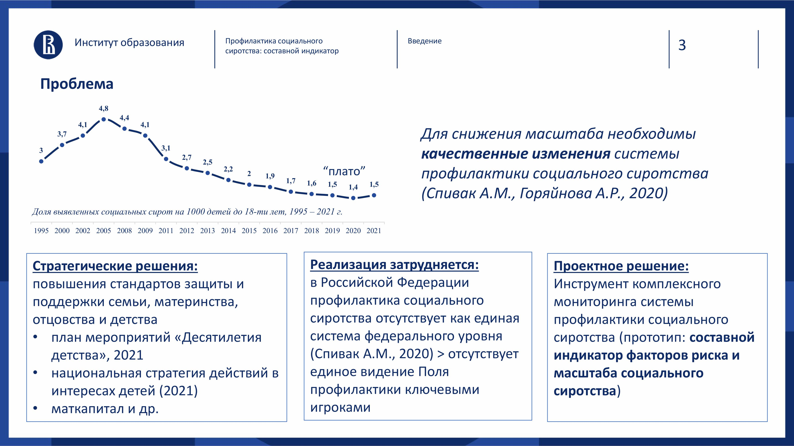
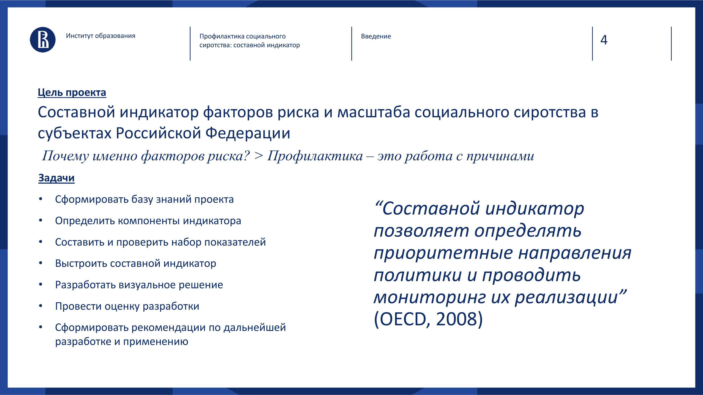

Проект представляет собой составной индикатор факторов риска и масштаба социального сиротства в регионах РФ.
Проблема: необходимо постоянно мониторить систему профилактики социального сиротства и находить приоритетные направления политики.